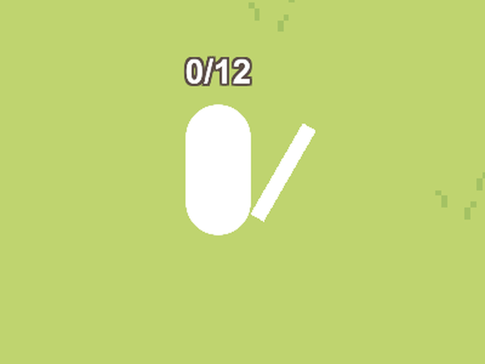

ตัวละครผู้เล่น
Player- ตอนนี้
- แคปซูลสีขาวล้วน (ภาพสำเร็จรูปของ Unity)
- ขนาดในเกม
- 0.70 × 1.40 หน่วย
- ขนาดภาพที่แนะนำ
- 280 × 560 ต่อเฟรม
- ใช้ที่ไหน
- ตัวเอกที่ผู้เล่นคุม มีตัวเลขของที่แบก (0/12) ลอยเหนือหัว ของที่เก็บหดหายเข้ากระเป๋า ไม่มีกองของบนหลัง
- ต้องวาด
- ภาพด้านข้างชุดเดียว (เกมพลิกซ้าย-ขวาเอง ไม่มีท่าหันหน้า/หันหลังแล้ว เดินขึ้นลงก็ใช้ท่าข้าง)
- ยืนนิ่ง (idle) 2–4 เฟรม
- เดิน 4–6 เฟรม
- โดนตี 1 เฟรม (เกมทำให้กะพริบแดงเอง)
- ล้ม/ตาย 1–3 เฟรม
- ชื่อไฟล์
- Player_Idle.png, Player_Walk.png, Player_Hurt.png, Player_Down.png
- หมายเหตุ
- กระบองเป็นอีกชิ้นหนึ่งที่ลอยข้างตัว ในภาพตัวละครไม่ต้องวาดกระบองหรือเป้
ดูข้อความที่จะคัดลอก
[ขอ Art] ตัวละครผู้เล่น (Player) ตอนนี้ในเกม: แคปซูลสีขาวล้วน (ภาพสำเร็จรูปของ Unity) ขนาดในเกม: 0.70 × 1.40 หน่วย | ขนาดภาพที่แนะนำ: 280 × 560 ต่อเฟรม ใช้ที่ไหน: ตัวเอกที่ผู้เล่นคุม มีตัวเลขของที่แบก (0/12) ลอยเหนือหัว ของที่เก็บหดหายเข้ากระเป๋า ไม่มีกองของบนหลัง ต้องวาด: - ภาพด้านข้างชุดเดียว (เกมพลิกซ้าย-ขวาเอง ไม่มีท่าหันหน้า/หันหลังแล้ว เดินขึ้นลงก็ใช้ท่าข้าง) - ยืนนิ่ง (idle) 2–4 เฟรม - เดิน 4–6 เฟรม - โดนตี 1 เฟรม (เกมทำให้กะพริบแดงเอง) - ล้ม/ตาย 1–3 เฟรม ชื่อไฟล์: Player_Idle.png, Player_Walk.png, Player_Hurt.png, Player_Down.png หมายเหตุ: กระบองเป็นอีกชิ้นหนึ่งที่ลอยข้างตัว ในภาพตัวละครไม่ต้องวาดกระบองหรือเป้ ส่งเป็น PNG พื้นหลังโปร่ง สไตล์เดียวกับไก่/หมูที่ทีมวาดไว้แล้ว